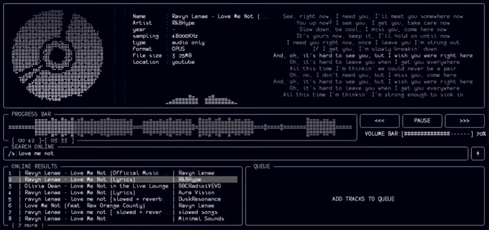

01
See the
sound.
FFT spectrum, waveform rendering, and spinning disk art turn playback into a living surface.
VISUALIZERS / REAL-TIMEA terminal music player for the signal-seekers
A focused, keyboard-driven player for people who would rather shape the experience than be shaped by it.
Personal preference is not a compromise.
Mousiki stays out of the way so the music can take over. No layers of UI. No attention economy. Just a sharp, configurable instrument between you and the sound.
Terminal-native by nature.
Alive by design.

Nothing you don’t.
FFT spectrum, waveform rendering, and spinning disk art turn playback into a living surface.
VISUALIZERS / REAL-TIMESearch and stream online without leaving the terminal. Keep the flow intact.
ONLINE / ON DEMANDWord-by-word synced lyrics keep the meaning close to the moment.
LYRICS / SYNCEDColors, visualizer fluidity, animations, hotkeys — tune every corner to your own workflow.
Every essential move is one key away. Your hands already know the way.
Open source. Apache 2.0 licensed. Made for the people who still like to know exactly what their tools are doing.
bash setup.sh